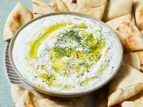

Tzatziki Recipe

Ingredient List:
- 1/2 cup grated cucumber
- 1 cup whokle milk Greek yogurt
- 1 tablespoon lemon juice
- 1/2 tablespoon olive oil
- 1 garlic clove, grated
- 1/4 teaspoon salt
Instructions:
- First, Dry the grated cucumber with a towel.
- Next, combine the yogurt, lemon juic, garlic, and salt.
- Finally, add in the cucmber and sprinkle with olive oil.
- Enjoy with pita bread or fresh vegetables.